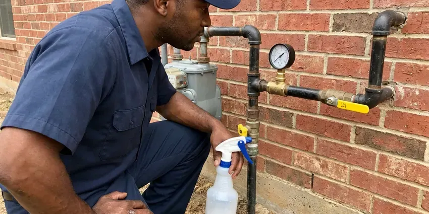
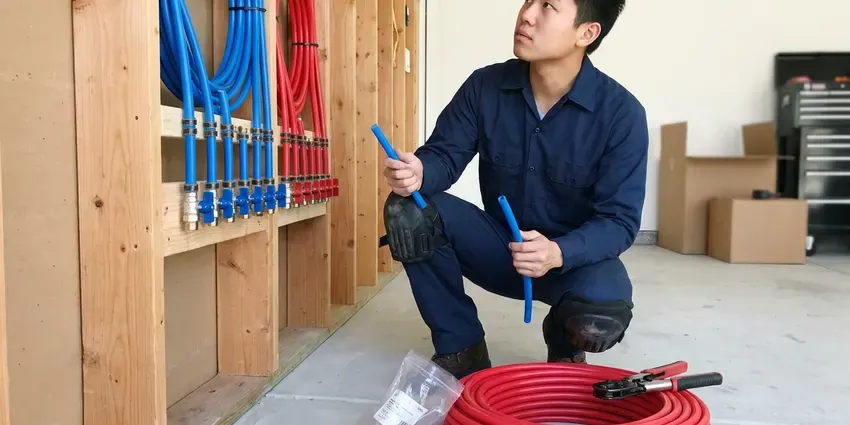

Commercial Plumbing in Champaign, IL
Need a commercial plumber who works around your hours in Champaign, IL? We handle backflow, grease traps, restrooms and water heaters after hours or on weekends.
- Local Illinois Experts
- Maintenance Plans Available
- After-Hours Scheduling
- Upfront Pricing

Get a Commercial Plumber You Can Rely On in Champaign, IL.
HVM Plumbing offers prompt, professional commercial plumbing services for businesses of all sizes.
Responsive Commercial Plumbing That Limits Downtime in Champaign, IL
At HVM Plumbing, we provide robust commercial plumbing solutions designed to meet the rigorous demands of Illinois businesses in Champaign. From high-capacity water heaters to industrial-grade drain systems, our team makes sure your commercial infrastructure works the way it should.
Our expertise includes:
- Flushometer, urinal, commercial water heater and booster pump service
- Commercial drain cleaning and hydro-jetting
- Annual backflow prevention assembly testing, repair and water provider reporting

Additional Plumbing Maintenance Services in Champaign, IL
Our maintenance and specialty plumbing services in Champaign, IL protect your home year-round and extend the life of every system.




Gas Line Repair in Champaign

Customers
Why Choose HVM Plumbing for Commercial Plumbing in Champaign, IL?
We offer scheduled maintenance plans that catch problems early and keep your property ready for inspections. One call takes care of multiple locations.
- Advanced Equipment, We rely on commercial-grade tools like hydro-jetters and video inspection cameras to provide precise and lasting repairs for your plumbing systems.
- 24/7 Availability, Commercial plumbing emergencies don't wait for business hours, so neither do we. Our team is on call to address critical problems anytime.
- Specialized Tools, Our technicians work with industrial-grade equipment like hydro-jetters and video inspection cameras for thorough commercial diagnostics and repairs.
Citywide Coverage
We serve businesses throughout Champaign, from downtown storefronts to industrial parks and suburban shopping centers. Our trucks carry commercial-grade parts so most repairs are finished in one visit.
Experienced Team
Each member of our HVM Plumbing commercial plumbing crew is licensed and insured, bringing years of dedicated experience to every job. We ensure our team stays updated on the latest commercial plumbing technologies and Illinois codes to provide superior service.
Safety-First Approach
HVM Plumbing places a high emphasis on code compliance for all commercial plumbing work in Champaign, IL. We ensure that every repair, installation, or maintenance service meets or exceeds current building and health codes to protect your business and its occupants.
Trusted Certified Champaign Plumbing Services Professionals
At HVM Plumbing, we take pride in providing certified plumbing services throughout Champaign, IL. Backed by leading industry credentials, our experienced plumbers combine technical skill with genuine customer care. Whether it is repair, installation, or maintenance, we follow strict safety and quality standards to deliver long-lasting results you can trust.
Call Us Now PHCC Plumbing Contractor Recognition
PHCC Plumbing Contractor Recognition Better Business Bureau (BBB) Accreditation
Better Business Bureau (BBB) Accreditation Angi Certified Pro
Angi Certified Pro ISO 9001 Quality Management Certification
ISO 9001 Quality Management CertificationProfessional Commercial Plumbing Services in Champaign, IL
Multi-Family and Property Management Plumbing in Champaign
Apartment complexes and HOAs need a plumber who can handle many units and quick turns. We repair leaks, replace water heaters, clear stacks and repipe buildings while keeping residents informed. Property managers get consistent pricing and detailed invoices for each unit. We also help plan capital projects like building-wide repipes.

Tenant Improvement and Build-Out Plumbing in Champaign, IL
When a space changes hands, the plumbing often needs to change too. We install new restrooms, break rooms, mop sinks and kitchen fixtures for tenant improvements. Our team works from your plans, coordinates with general contractors and passes inspections on schedule. We also cap and abandon old lines correctly.
Commercial Drain Cleaning in Champaign
HVM Plumbing offers specialized commercial drain cleaning services to keep your business's plumbing flowing freely. We use industrial-grade equipment like hydro-jetting machines, which use high-pressure water to scour the inside of pipes, effectively removing grease, food waste, and other common commercial blockages. This method is far more effective than traditional snaking for large-diameter commercial lines and delivers a thorough clean, preventing recurring clogs that can disrupt your operations in Champaign.
Commercial Restroom Fixture Service in Champaign, IL
Maintaining functional and hygienic restrooms is vital for any commercial establishment in Champaign, IL. HVM Plumbing provides comprehensive services for commercial restroom fixtures, including repair and replacement of toilets, urinals, sinks, and automatic faucets. We address common problems like persistent leaks, clogs, and low water pressure, making sure your commercial restrooms are always in excellent working order for your patrons and employees.
Drain Jetting and Sewer Camera Work in Champaign
Commercial drains carry grease, paper and debris that build up faster than in homes. We use high-pressure jetters to scour main lines and camera equipment to locate breaks, roots and bellies. Video records help you plan repairs and budget for capital work. Preventive jetting reduces emergency backups.
Commercial Restroom Plumbing in Champaign
Busy restrooms take a beating, and a broken flushometer or leaking urinal frustrates customers. We repair and replace Sloan and Zurn flush valves, sensor faucets, wall-hung toilets and carriers. We also install ADA-compliant fixtures and grab bar backing during remodels. Quick repairs keep your facilities clean and open.
Grease Trap and Interceptor Service in Champaign, IL
Restaurants and food service sites must keep grease out of the public sewer. We inspect and service grease traps and interceptors, replace baffles and clear the lines leading to them. Hydro jetting removes hardened grease from kitchen drains that cables cannot clear. Regular service helps you pass health inspections and avoid sewer backups during dinner rush.

Commercial Leak Detection & Repair in Champaign, IL
Even small leaks in a commercial setting can lead to serious water damage, mold growth, and high utility bills. HVM Plumbing utilizes advanced leak detection technology, such as acoustic sensors and thermal imaging, to pinpoint hidden leaks in walls, ceilings, and underground pipes without destructive exploration. Once located, our skilled plumbers perform efficient and durable repairs to restore the integrity of your commercial plumbing system in Champaign, IL.
Commercial Plumbing Near Me in Champaign, IL
When you search for "commercial plumbing near me" in Champaign, IL, you want a dependable, local company that understands the specific needs of Illinois businesses. HVM Plumbing is your community partner, offering fast and professional service right in your neighborhood. Our local expertise means we're familiar with the common commercial plumbing challenges posed by local water conditions and building codes.
We know the water providers, inspectors and code requirements that apply to Champaign businesses. That familiarity helps us keep your property compliant. Your operations stay on track.
HVM Plumbing at a Glance
- Licensed and insured plumbers serving Champaign, IL
- Same-day appointments and 24/7 emergency response
- Upfront, flat-rate pricing before work begins
- 4.8-star rated by 528+ Illinois customers
Champaign Map
Champaign Information
- Population
- 89,189
- Area codes
- 217/447/309
- Service area
- Champaign and communities within 40 miles
- Nearby
- Decatur, Bloomington, Normal, Kankakee
For businesses in Champaign, IL, durable commercial plumbing is essential to withstand heavy usage, and our services are built to address local water conditions and the operational needs of your business.
Expert Services
Trust our professionals for reliable HVM Plumbing solutions in Champaign, IL.
Our Specialized Plumbing Services in Champaign, IL
At HVM Plumbing, we provide a complete range of plumbing services across Champaign, IL. From leak detection to full system installations, our team ensures fast, precise, and affordable service for both residential and commercial properties. Explore our core services below:


How Our Commercial Plumbing Process Works in Champaign, IL
We keep commercial service simple, documented and scheduled around your hours.
Request a Quote
Contact HVM Plumbing at (773) 903-7643 to schedule a commercial plumbing service or request an emergency response. We'll gather details about your problem and dispatch a qualified technician to your Champaign business.
On-Site Assessment
Our commercial plumber arrives on time to your business in Champaign, conducting a thorough diagnosis of the plumbing problem using specialized tools. We will clearly explain the issue and propose the most effective solution.
Expert Service
With your approval, our technician will perform the necessary commercial plumbing repairs, installations, or maintenance. We use high-quality parts and follow industry best practices, ensuring lasting results for your Champaign business.
Frequently Asked Questions About Commercial Plumbing in Champaign
Service calls for small commercial repairs typically run $200 to $600, and larger projects are quoted individually. Backflow tests typically cost $75 to $175 per device.
Hydro-jetting is a powerful drain cleaning method that uses high-pressure water streams to thoroughly clear commercial pipes of blockages, grease buildup, and debris. It's very effective for commercial kitchens and other businesses in Champaign that accumulate significant FOG (fats, oils, and grease), providing a much more complete clean than traditional snaking.
HVM Plumbing services and installs all major brands of commercial water heaters, including A.O. Smith, Rheem, Bradford White, Ruud, and State. Our technicians are trained to work on many types, such as gas, electric, and tankless commercial units, making sure your business has reliable hot water.
Yes, we install plumbing from plans, pull permits and coordinate with your general contractor. We schedule inspections to keep your opening date on schedule.
Slow floor drains, gurgling toilets, sewer odors and repeated backups point to buildup or line damage. A camera inspection shows exactly what is wrong.
Yes, we schedule work before opening, after closing and on weekends. Emergency service is available for burst pipes, backups and other urgent problems.
We service Sloan, Zurn, American Standard, Kohler, Chicago Faucets and T and S Brass fixtures. We also service Watts, Wilkins and Febco backflow devices.
HVM Plumbing stands behind the quality of our commercial plumbing work. We offer a comprehensive warranty on both parts and labor for all services performed. The specific terms of the warranty will be clearly outlined in your service agreement, providing peace of mind for your investment.
What People Are Saying About Our Plumbing Experts?

James P.
Our commercial plumbing system had a leak under the sink, and HVM Plumbing handled it professionally. The plumbers arrived quickly and restored everything without disruption to our customers.
Commercial Plumbing · Peoria, IL
Patricia H.
We had a slab leak that two other companies could not find. HVM Plumbing located it in under an hour, explained our options, and the price matched the quote to the dollar.
Slab Leak Repair · Peoria, IL
Laura S.
I scheduled a water heater replacement, and the team made the process smooth and affordable. The new unit works perfectly, and they cleaned up after completing the job.
Water Heater Replacement · Springfield, ILRobert G.
The trenchless sewer replacement saved our front yard. They walked us through the camera inspection footage first so we knew exactly what we were paying for.
Sewer Line Replacement · Bloomington, ILEmily R.
I called HVM Plumbing for plumbing repair, and the technician was fast, polite, and thorough. They explained the problem clearly and fixed it the same day. I will definitely hire them again. Highly recommended!
Plumbing Repair · Bloomington, ILSofia M.
Two new toilets installed in one visit, no mess left behind, and the tech even adjusted a faucet he noticed was dripping. Fair pricing and really friendly.
Toilet Installation · Champaign, IL